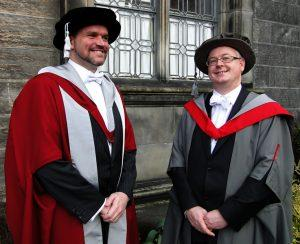

Posts about university (old posts, page 1)
Inauguration
A couple of weeks ago I attended my professorial inauguration.
In most universities (in the UK and Ireland, anyway), a professorship is just a job that doesn't involve any particular ceremonial: it doesn't come with a degree, and so doesn't require a graduation. In St Andrews, of course, things are rather more formal. All new professors have to attend a St Andrew's Day graduation in order to swear an oath to the university. I should have been inaugurated last year but couldn't make it because of a prior engagement, so this year I attended along with my colleague Aaron Quigley and ten other new profs.

(Photo courtesy of Brad Herbert.)
The day took place in sub-zero temperatures with swirling snow at times, despite St Andrews overall having the mildest climate in the UK: I had to stay up overnight just to make sure I'd make it in, since commuting in from Edinburgh as usual would have been a bit risky.
We started in chapel for a thanksgiving for graduation, where I discovered that the "school song" (or at least the hymn to St Andrew) is sung to the tune of Deutschland uber alles, for reasons that remain unclear. Immediately afterwards was the graduation ceremony, held next door in the university's Younger Hall.
Like most "ancient" universities, St Andrews' graduations are full of symbolism. Most of the important parts of the ceremony are conducted in Latin,although not to the extent of excluding all English as happens in Cambridge and in Trinity College Dublin. The academic procession happens juniores priores, with junior staff preceding senior -- and new professors coming first of all, since they're regarded as nobodies until inaugurated. We sat at the front of the hall while the other academics processed into the stage, and waited while the undergraduate and postgraduate degrees were conferred -- which involves being hit on the head with the birretum, a piece of cloth allegedly taken from John Knox' britches.
Academics always play spot-the-gown at these sorts of events. There are basically two classes of gowns. University officers performing their function wear gowns related to their office, so the Principal, while officiating, wears a black-and-white Principal's gown rather than the one for her Harvard doctorate. Regular academics wear the gown related to their highest degree, with the colours, hoods and patterns being determined by the awarding university. A lot of doctoral degrees involve red and gold; St Andrews doctorates are sky blue. (Mine is a fawn/grey gown and hat with a red hood, being a DPhil from the University of York. It's quite understated in comparison to a lot of others, which suits me fine.) St Andrews is unusual in also having an undergraduate gown, different to the gowns for graduates, which is bright red and made of fleece rather than cotton. Useful for keeping warm on the pier walk. A surprising number of undergraduates wear their gowns around town, which just goes to show the bond that exists between the university and its students, and isn't something one encounters in many other universities.
{kind=link}
The inauguration of new professors involved us all coming onto the stage and being asked to swear the oath to uphold the rules and traditions of the university (in Latin, of course -- the important word was polliceor, "I so promise"). At this point I discovered the term for computer science in Latin: computandi ope machinali promovendae. After that we were each presented with a book as a token of our new office (which they took back immediately after we left the stage, although they did buy me a nice copy of Hugh Trevor-Roper's "History and the Enlightenment" later, with a commemorative bookplate in it). The Principal then addressed us, in Latin again: Quod felix fortunatumque sit, spartam nacti estis: hanc exornate ("I wish you all happiness and good fortune. You have been allotted Sparta: do it credit."). And it was done. We processed out of the hall (in reverse order, seniores priores, this time) and back to the main quad of St Salvator's college for photos in the snow and lunch. There was a garden party in the afternoon (thankfully in a heated marquee), and a formal graduation dinner in the evening.
Several years ago, after I got married, someone asked me whether it had made a difference to how I felt. I replied that I'd expected the answer to be "no", in that the important thing was the deciding to stay together and not the piece of paper and the public promise -- but that in fact it did make a huge difference. The public act had a significance in and of itself (for me, at any rate), and did make the whole thing feel more real and more certain. Slightly surprisingly, inauguration feels the same way. In practice it makes no difference to my holding or doing the job, but the public act gives a significance to it that I wasn't expecting (again). The common theme between the two situations may be that the commitment is two-way, between myself and my university colleagues and students in this case. A number came up to me afterwards to welcome me -- despite my having been here for over a year -- which makes one feel rather wanted.
There's a lot to be said for ceremonial like this. It's important for the students, of course, to mark their achievement: but it's perhaps equally important for the academic staff, for holding an institution together, especially at times like these when there's something of a feeling of being under siege in a world that doesn't necessarily understand or appreciate what universities are for or what we're trying to accomplish. The coming-together to mark key events, and to affirm that a university is a community with shared goals, is something that can only be good for morale, and is something we should do more of.
The three academic stereotypes
You encounter a lot of different personalities in academia, but when you get right down to it they all seem to fall under three basic stereotypes.
OK, I admit it's a gross over-simplification, but here we go:
The young gun
Young guns are the change-makers of academia: the people who want to change anything that doesn't work and replace it with something better -- or at least something different that can be tried out and tested to see if it is better. This often makes them talented researchers (although not necessarily more so than stalwarts, the next stereotype), but they're typically found in larger groups, taking on larger projects and collaborations.Young guns can be of any age. They tend to be young, of course -- often junior staff who are keen and un-jaded, who want to move their discipline forward and teach it as well as it can be taught. They're often found pushing for new modules, new degrees, new ways of teaching and assessment -- and for promotion. But they don't have to be calendar-years young: the gun-iest young gun I've ever met was in his late 40s when I first went to work for him, is now approaching retirement, and still has more ideas and energy than most people a third his age. These people feel young even when they aren't.
As is probably apparent, young guns can be hell to work with, since for them everything is potentially up for grabs. They're often (but not always) better at idea-forming than at execution, and often (but not always) lack the long-term detail-orientation to make sure that their ideas work out. They are often (but not always) egotists, who may not recognise when a change they've become passionate about is wrong or not working. But without them there's no-one to drive change forward and make sure that schools and disciplines stay fresh and relevant.
The stalwart
The majority of people in academia are stalwarts: people who have clear ideas about the things they want to do and how to do them, but are essentially positive about their activities. They might not lead change, but they'll row-in alongside if they like it and will accommodate to anything that's broadly agreed.
This applies equally to teaching and research. The typical stalwart will teach modules carefully, perhaps changing the content and delivery only slowly if left to their own devices but being perfectly open to updating to include new ideas. In research they will typically be found slightly off the mainstream with a small group of students (often only one at a time), not going for large grants or big collaborations but being solid supervisors and contributors at a small-to-medium scale. Often they come up with great ideas, because they pursue a line of research solidly over a long period and so become world experts. The ideas might not be widely circulated, and so it's easy to underestimate the sophistication stalwarts bring to their work. They may need prodding to publish appropriately, but they'll then address tat problem as effectively as everything else they do.
Stalwarts are essentially positive people, working within a well-defined comfort zone. They are the backbone of any research project or school, and need to be appreciated and rewarded appropriately. They also need to be listened to carefully, since they provide a stability and a sanity that young guns often lack, and will make sure that changes are properly thought through and executed upon.
The twisted nay-sayer
The first two stereotypes are basically positive, but it all goes down hill with the third: the twisted nay-sayer. (I can't claim credit for the great name, incidentally, which is due to Paddy Nixon.) Twisted nay-sayers oppose all change, no matter of what kind and no matter how motivated, and will to continue to oppose changes even long after the decision has been made and the time for action has passed.
On first acquaintance, a twisted nay-sayer often seems to be someone who's stuck-in-the-mud, after an easy life, and not wanting to have the hassle of changing -- a bit like a rather negative stalwart. But this is to overlook the twisted part, which will not only avoid change but actively scheme against it, or to reverse it afterwards. It's this essential negativity that sets this type apart from others. They can, perhaps surprisingly, be excellent researchers, but they'll also be constantly highlighting their successes to anyone who'll listen, even when those successes are long in the past. When faced with a new field or innovation they'll point out that it's really just a poor re-discovery of something that was current years ago, or just an instance of some pet area of theirs that the new innovators should really have found out more about.
The two things to remember about twisted nay-sayers are that they are egotists, and that they are made, not born -- the young gun's dark shadow. You make them by thwarting the expectations they have for their careers. This can happen in two ways: either their expectations were unreasonable, and reality has intruded; or their expectations were completely reasonable but were thwarted by circumstance, malice or indifference. A particularly common case is someone who's been repeatedly passed over for a promotion they think (rightly or wrongly) that they deserve. The repeated denial of their aspirations eventually causes them to give up, turn their back on the future they can't have -- and then rail against fate and everything that comes afterwards.
How, then, are we to deal with the different kinds of academics? Most people fall into some compromise between categories (stalwart with young-gun moments, for example), but clearly one needs to understand an individual's primary motivations in order to know where they're coming from. I think the trick is to make sure a school keeps, listens to -- and occasionally reins-in -- its young guns; recognises and rewards its stalwarts; and tries hard not to grow any twisted nay-sayers.
All these activities are fraught with danger -- especially in academia, where we lack most of the levers of control that normal organisations have. A school can't typically promote on its own recognisance. Not promoting those who feel they deserve it risks overlooking a young gun and having them leave, or (worse) stay, but mutate into a twisted nay-sayer. On the other hand, many promotion boards over-value their young guns and ignore their stalwarts, who then feel under-recognised. Doing so can destroy the stability of a school and can lead fragmented research programmes, and to teaching being good at the edges but lacking a proper core. It's also worth remembering that some people in senior academic positions are extremely conflict-averse and so will cave-in to pressure from twisted nay-sayers in the interests of consensus -- not realising that consensus is neither possible nor desirable, and that acquiescing will only lead to more obstructionism, because it's about the obstruction, not the particular issue at hand. It takes confidence to say yes to experimental change -- but equally it takes confidence to say no when necessary.
Computer scientists as university principals
I was surprised to discover a computer scientist as principal of a world-leading university the other day. I was even more surprised to discover that there have been several others.
Now I suppose I should first admit that I don't know why I'm surprised by this -- but I am. In most institutions computer science very much takes a back seat compared to other, more established Schools: physics, mathematics, biology, history and the like. It's hard to see why this should be the case, especially given computer science's central role in the new science and the fact that it's often one of the highest-earning Schools in terms of research and innovation income (although St Andrews is unusual if not unique in having a humanity -- international relations -- as it's highest-earning School, and from which we've drawn our current Principal).
The person I came across was John Kemeny, who was president of Dartmouth College in New Hampshire through the 1970s. Kemeny is one of the co-inventors of the BASIC programming language, which provided me (and many others) with their first introduction to computer programming. BASIC was invented at Dartmouth, of course, so it's perhaps unsurprising that he should have risen to such a position of influence. It's hard to over-estimate how important BASIC was, in a world then populated by low-level assembly code or compilers of dubious quality: the first Pascal compiler I used used to spit-out assembly code so you could go through it, optimise and correct it by hand. As an interpreted language, BASIC provided a far simpler and more accessible introduction to what computers were capable of, and even on early 8-bit microcomputers was fast enough to be used for both serious applications and games.
Having tweeted my surprise at this, I was then told about other computer scientists who've led -- or indeed lead -- universities:
- Maria Klawe (algorithm design, accessibility), President of Harvey Mudd College
- Tim O'Shea (computer-assisted learning), Principal of the University of Edinburgh
- Ewan Page (mainframe pioneer), Vice-Chancellor of the University of Reading
- John Hennessy (processor design), Provost and then President of Stanford University
- Jane Grimson (databases, health informatics), Vice-Provost of Trinity College Dublin
- Jeff Vitter (algorithm design), President of the University of Kansas
- Paddy Nixon (pervasive computing), Vice-Principal for Research, University of Tasmania
Before anybody asks, this is not a tradition I have the slightest interest or intention of following in -- or indeed the ability to do so. But it's great to see that techies can and do aspire to the top job.
The first year
Today marks the first anniversary of my moving to St Andrews. What have I learned since then?
It's a strange feel to be reflecting on a year of my life, not least because it doesn't feel like a year. Sometimes it feels like a lot less: I still feel very attached to Ireland, and I find that I spend a lot of time comparing the Scottish experience to y experiences of the previous twelve years. But in other ways it feels a lot longer than a year, in that I think I've found a professional home in St Andrews that's exceptionally well-suited to my way of researching and teaching.
So what are the differences? There are several things that spring out. Firstly there's the size of the place -- or lack of it. The university has around 6,000 undergraduate students and maybe 2,000 graduate students, so it's significantly smaller than UCD -- about the same size as Trinity College Dublin, I suppose. This has a corresponding impact on class sizes, where a 30--40 student second-year class, and maybe 10--15 (or less) in third and fourth years, is considered perfectly normal. That in turn leads to a more individual and interactive style of teaching.
The second impact of size is in research, and especially in multi-disciplinary research. St Andrews is so small that one can know everyone (or at least anyone you want to), and can find and gain access to people doing research in whatever topics there are in the university that are of interest. In the past year I've interacted with marine scientists, astronomers, mathematicians, geographers, psychologists, medics and others, on a basis that will probably lead to some sort of proposal for collaboration or funding. One can do that in any full-spectrum university, of course, but size does make a difference: the intimacy of St Andrews, the fact that nowhere is more than a fifteen-minute walk away, makes it so much easier to interact. In a larger institution, and one with a larger computer science contingent, there's a strong tendency to remain within a smaller comfort zone that's not conducive to multi-disciplinary collaborations. I think we'll be able to leverage our smallness.
Thirdly, St Andrews takes teaching way more seriously than any other university I've worked in (or studied in, for that matter). All universities claim that teaching is a core part of their mission, of course, but it often doesn't get treated with the same urgency or seriousness as research. That's in part a function of how we're evaluated: both individual staff promotions and the most popular global university rankings are heavily biased towards research excellence, and staff and managers inevitably respond to those incentives. But I suspect it's more than that. St Andrews' processes are very focused on teaching, as is the academic culture, in a way that'd uncommon in my experience (which is limited to the UK and Ireland, of course). I do all my own teaching, all my own marking, and participate in small-group tutorials both for and beyond the modules I teach myself. Moreover the processes of assessment, tracking and evaluation of students' progress have tool support and are monitored from both the School and the centre. Other universities I've worked in don't have this degree of monitoring -- or indeed any monitoring. That doesn't mean that teaching isn't done well in those places, of course, but it does indicate where a university's priorities lie. (In case this sounds like altruism, it isn't: the National Student Survey results pull St Andrews up the rankings that take account of student satisfaction, and mean that the university can legitimately lay claim to offering an excellent experience to prospective students. It's a good example of the university taking a broader and longer-term view than other institutions.)
Following on from this, Scottish universities teach degrees with a "broad curriculum" in which students take a rather general two-year sub-honours programme before specialising into a further two-year honours programme. This provides a broader base for students and avoids too-early specialisation, which I think is a good idea. I hadn't quite appreciated what a difference it makes in practice until earlier this week, when I did a lecture on the history of the internet and what its evolution means for society in terms of publishing, privacy, trust and access to information. I've done technical lectures like this to computer science students before -- I've used the evolution of the internet as a case study of large-scale systems design for software engineering students, for example -- but this was an introductory for first-year students from across the university, both sciences and humanities. That's not something that happens very often these days: in fact, in twelve years as an academic I've never lectured a broad-ranging class like that before.
There's something rather exciting about being able to address broader questions of technology's impact on society, and to set essay-style questions, when one is used to the more technical style of scientific lecturing. Not only does it allow a more far-reaching and questioning style of teaching, and the associated invitation to oneself to think through the broader questions: it also feels like it might have an impact, however small and however subtle, on a wide range of students who'll perhaps never encounter computer science again -- but who will undoubtedly be affected by it profoundly as part of its impact on society. It was particularly nice to bring the recent discussions about the internet's effects on learning to their attention, as well as to talk about sensing and its effects on privacy.
Are there any things not to like? The lack of a senior common room is a little peculiar in a university of this age, only partially made-up for by a staff dining club that meets only infrequently. There are actually very few social occasions for staff across the university, which is a shame given the effort put in to student societies and the student experience: some more activities targeted at academics and researchers would be welcome. St Andrews itself is also somewhat remote from the rest of Scotland, more so than I first thought from looking on the map, but we've addressed this by moving to Edinburgh, which has everything one could want from a culturally vibrant city. I'm looking forward to what the next year may bring.
Are the grey philistines really in charge?
Recently there's been an exchange in the Irish media about the decline of intellectuals in universities and calling into question whether universities are still fit for purpose given their funding and management structures. The fundamental question seems to me to be far deeper, and impacts on the UK and elsewhere as much as Ireland: what is -- or should be -- the relationship between academics and their funding sources? To what extent does the person paying the academic piper call the research tune?
The opening shot in this discussion was published in the Irish Times as an op-ed piece by Tom Garvin, an emeritus (retired but still recognised) professor of politics at UCD, Ireland's largest university, although perhaps his intervention was triggered by a rather more supportive editorial in the same paper a few days before. The piece is something of a polemic, but revolves around the lack of support for curiosity-driven ("blue skies") research within the university system. "A grey philistinism [Garvin writes] has established itself in our universities, under leaders who imagine that books are obsolete, and presumably possess none themselves." He then goes on to attack the application of science-based research methods such as team-based investigation to humanities, and observes that even for sciences there is no longer scope for free inquiry: "Researchers are being required by bureaucrats to specify what they are going to discover before the money to do the research is made available." The article provoked a large number of supportive comments from readers and a rather narrow response from UCD's management team.
The questions Garvin raises deserve consideration, and he should be commended for raising them. Indeed, they cut to the heart of whether universities are fit for purpose. Does the linking of funding to student numbers (whether under- or post-graduate) and to the pursuit of State-guided research programmes, the desire to profit from commercially significant results, and the need (or at least desire) to excel in international league tables impact on academics' ability to investigate the world and pass on their results freely?
(For full disclosure, I should point out that I'm a computer science academic who, until last year, worked at UCD.)
There are, of course, major differences in topic area and research philosophy between research in sciences and in humanities, and I'm sure it's fair to say that the same research approaches won't translate seamlessly from one to the other: studying and commenting on the writings of others wouldn't constitute computer science, for example. Having said that, though, there are advantages to be had from considering the ways in which techniques translate across fields. I'm sure some projects in history (to use Garvin's example) would benefit from a team-based approach, although clearly others wouldn't -- any more than all physics research is conducted in large teams with large machines.
As a science researcher I have to point out that the crux of this argument -- specifying results before being granted funding -- is of course nonsense. When I apply for a grant I'm required to describe what I intend to investigate, the methods I'll use and the expected benefits of the investigation. This of course is a long way from specifying what I'll find, which of course I don't know, in detail: that's the whole point, after all. I don't find this to be the mental straitjacket that Garvin seems to think it is: quite the contrary, spelling these matters out is an essential planning phase to design and manage what is likely to be a complex, elongated and collaborative endeavour. If I can't explain what I want to do in a research proposal, then I don't know myself.
But the real question isn't about management: its about justification. Research proposals can (and probably should) be written for any research programme, but they're typically used to get funding. And it's here that we encounter the constraints on blue-skies research. A funding agency, whether public or private, will only fund research from which they'll get an acceptable impact and return on investment. Different agencies will judge that return differently. Commercial funding usually follows topics that will lead, directly or indirectly, to future profits: it's hard to see how a company's board would be meeting its fiduciary duties if it did otherwise. Private foundations and State agencies such as research councils generally have a different definition of impact, for example the abstract scientific significance of a topic or its ability to effect social change. So to that extent, an academic who takes on research funding agrees, at least tacitly, to support the funder's chosen model for assessing their research. There are some nasty examples where this causes problems, the classic case being research sponsored by tobacco companies, and taking funding doesn't excuse from their duties as scientists to collect and report their findings honestly and completely, but in the main the system doesn't cause too many dilemmas.
Given that many universities derive a large fraction of their income (approaching 100% for some) from the State, it is natural that the State will have an interest in directing resources to topics that it regards as more significant. To do otherwise would be to neglect the State's responsibility to the electorate. Academics are not democratically accountable: it is unreasonable to expect that they should be responsible for the allocation funds they have no authority to collect.
However, there's another point that needs to be made. Most academic appointments centre around teaching and conducting research, and not around getting funding. This has important implications for Garvin's argument. The UK and Irish university systems are such that there is absolutely no constraint on an academic's ability to do curiosity-driven research: I can conduct research on whatever topic I choose, and publish it (or not) as I see fit, at my absolute discretion (absent ethical considerations). I would be meeting fully my obligations to my employer, since these relate to my meeting my teaching and research commitments. But I can't expect an external agency to fund me additionally, and it would be surprising if it were otherwise. Put another way, my academic position is my opportunity to conduct my own curiosity-driven research, but if I require resources beyond my own I have to justify the wider benefits that will derive from that additional funding. There may be other side-effects: certainly in sciences, anyone without a significant funding profile would struggle to be promoted. But a requirement to justify the value one expects from a research programme before it's funded is hardly a crimp on academic freedom.
There's also a mis-understanding in some circles about how science is conducted: a perception that scientists go rather robotically about the conduct of the scientific method, collecting data and then drawing conclusions. This is hardly a surprising mis-perception, given that it's almost implicit in the structure of a typical paper. But it nonetheless mis-states the importance of intuition and curiosity in deciding which hypothesis -- amongst the infinite possibilities -- one chooses to explore. (Peter Medawar. Is the scientific paper a fraud? The Listener 70, pp. 337-378. 12 September 1963.) Without curiosity there can't really be any science: in fact one could go further and say that science is simply curiosity with a bit of useful structure attached.
Garvin's other point, about the lack of influence of academics on public life, was picked by Kevin Myers in the Irish Independent as evidence of cowardice and a disinclination to risk-taking. From the perspective of the humanities this may be true, and it's not for me to comment, but from the perspective of the sciences academics have become more engaged over time in the big issues: climate science, online-privacy and evolutionary biology are the three highest-profile examples of where science academics have stepped into the public realm. It's also important to note that these three examples are first and foremost social in their impact: the science is there to inform public understanding, debate and policy.
It's unfortunate that in many of these discussions "academic" has been taken tacitly to imply "academic in the humanities" -- as though scientists were somehow less "academic" (whatever that means). In the past it was perhaps more expected for humanities academics to engage as public intellectuals, but a lot of the modern world's problems simply can't be understood, let alone be debated and addressed, without the serious and deep engagement of the scientists themselves in the debate. This, perhaps, is the biggest challenge: to capture, leverage and pass on the excitement for learning and for research into the wider community. As long as that continues to be a central goal, universities remain fit for purpose.